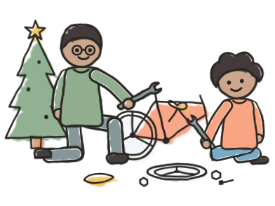
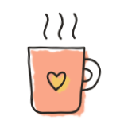

Welcome back
Day 3 of 8 · Tuesday 6 October

Where are you?

Building a factory
 Building something with it
Building something with it
Put yourself on the radar on Miro
Today
Today
What happened?
“What did you do? What did you watch?”

Today
How was the homework?

Appreciations
1 min alone · pairs or threes · then all of us
Today
Teach back
“What do you know about validation?”

Today
Capstone
my-capstone/
docs/
vision.md
iterations/
001-<goal>.md
“What should you be able to demonstrate at the end of iteration one?”
Today
Homework
- Your capstone: write the vision, plan iteration 1, run your factory on it
- When the factory breaks, fix the factory
- Context engineering: sign up for one reading, and teach it to us on Thursday

Retro and takeaways
“One thing you're taking away.”
See you Thursday!